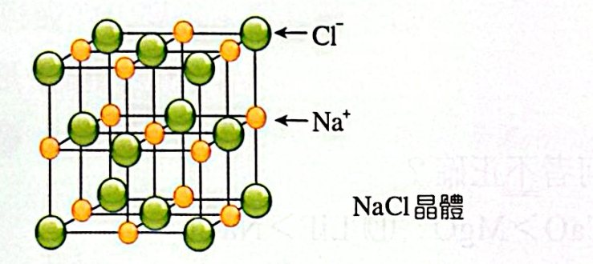
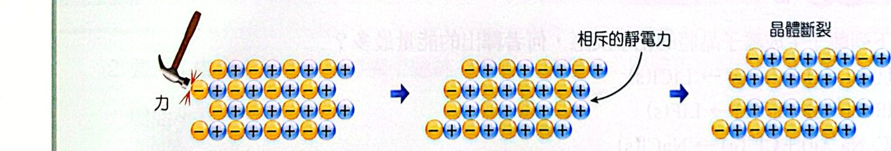
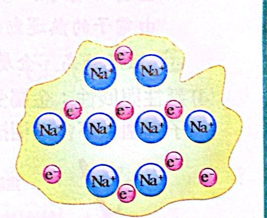
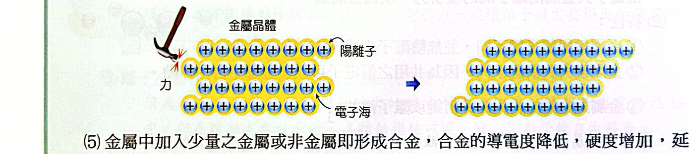
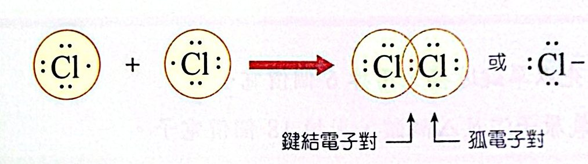
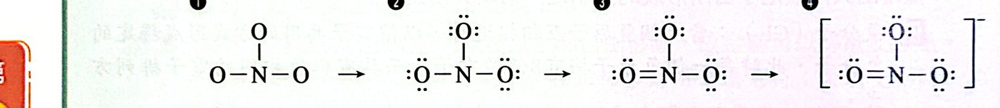
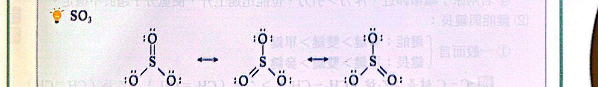
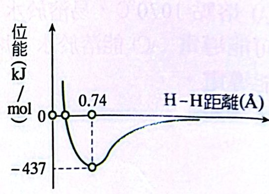
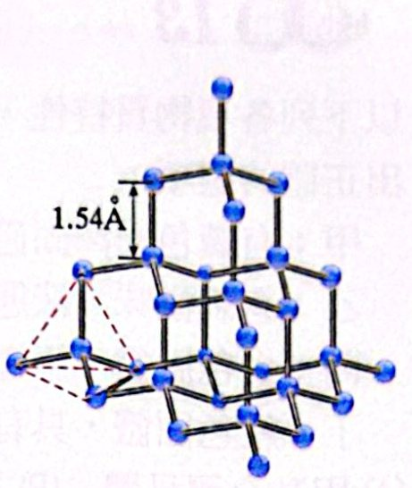
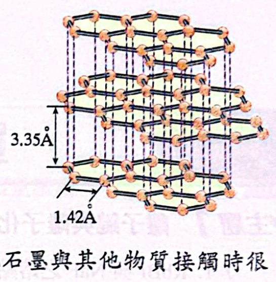

重點整理
一、化學鍵
原子結合成新物質時，會得失價電子或共用價電子，使每個原子具有和鄰近鈍氣一樣的價電子數（H 為 2 個，其餘為 8 個），原子間因此產生的吸引力稱為化學鍵。
依形成方式分為：離子鍵、共價鍵、金屬鍵。
二、離子鍵與離子化合物（高一複習）
1. 離子鍵
(1) 形成：原子間發生電子轉移，產生陽離子與陰離子，彼此以庫侖靜電引力結合。
例：氯化鈉
1. Na 失去 1 個電子成 Na+（Ne 的電子排列）
2. Cl 得到 1 個電子成 Cl−（Ar 的電子排列）
3. Na+ 與 Cl− 以靜電引力結合 → 離子鍵
(2) 強弱：鍵能 ∝ (Q+ × Q−) / (r+ ＋ r−)
- 半徑和相近時，電荷乘積愈大，離子鍵愈強、熔點愈高：MgO（2800 ℃）＞ NaCl（801 ℃）
- 電荷乘積相等時，半徑和愈小，離子鍵愈強：LiF（845）＞ NaCl（801）；MgO（2800）＞ CaO（2572）
2. 離子化合物
(1) 組成
- 金屬＋非金屬：NaCl、KOH、CuSO4
- 銨根 NH4+ 與非金屬離子或酸根：NH4Cl、(NH4)2SO4
(2) 性質
1. 陰陽離子依一定方式交替排列成離子晶體。NaCl 中每個 Na+ 被 6 個 Cl− 包圍；每個 Na+ 周圍最近的 Na+ 有 12 個。
2. 熔點高，常溫為固態。
3. 固態不導電，熔融態或水溶液可導電（離子可自由移動）。
4. 質硬而脆，無延展性（受力錯位後同電荷相對而互斥斷裂）。
5. 無單獨分子，以實驗式（簡式）表示，如 NaCl、CuSO4。

NaCl 晶體

離子晶體受力 → 同電荷相斥 → 斷裂
三、金屬鍵與金屬晶體（高一複習）
1. 金屬鍵
(1) 形成：金屬原子釋出價電子成為陽離子，價電子在晶體中自由移動形成「電子海」；電子海中自由電子與金屬陽離子間的吸引力就是金屬鍵。

電子海模型
(2) 特性
- 沒有陰離子（與離子鍵不同）
- 價電子可在整個金屬中自由移動（與共價鍵不同）
- 鍵能約只有共價鍵或離子鍵的 1/3（金屬電負度小，自由電子受核吸引較弱）
(3) 強弱（熔點高低）
- 價電子愈多、半徑愈小、堆積愈密 → 金屬鍵愈強
- 同週期由左向右漸增：Na（98 ℃）＜ Mg（650）＜ Al（660）
- 鹼金屬往下漸弱：Li（186）＞ Na（98）＞ K（64）＞ Rb（39）＞ Cs（28）
- 鹼土金屬堆積方式不同，無規律：Be（1283）＞ Ca（845）＞ Sr（770）＞ Ba（725）＞ Mg（650）
2. 金屬晶體的特性
- 無單獨分子，以實驗式表示：Fe、Cu
- 熔沸點高（汞 −39 ℃ 例外）：鎢 3422 ℃、鎂 650 ℃
- 熱、電良導體（自由電子）。溫度升高或加入雜質，導電性下降。
- 延性與展性佳：受力位移後陽離子仍被電子海包圍，不會互斥。
- 加入少量其他金屬或非金屬成合金：導電度降低、硬度增加、延展性變小。

金屬受力變形但不斷裂
四、共價鍵與分子（高一複習）
1. 共價鍵
兩原子共用價電子對，共用電子對同時吸引兩個原子核而結合。
- 共用的電子對：鍵結電子對，以「:」或「−」表示
- 未共用的電子對：孤電子對（未鍵結電子對）
- 依共用電子對數：單鍵 H−H、雙鍵 O＝O、參鍵 N≡N

Cl2 的形成
2. 分子
- 非金屬＋非金屬以共價鍵形成分子：元素分子（H2、O3、P4）、分子化合物（H2SO4、HF、CO2）
- 性質：分子間吸引力小 → 熔點低、硬度小；固態、熔融態皆不導電；無延展性；以分子式表示。
3. 路易斯結構的畫法
- 算價電子總數（陽離子減去、陰離子加上電荷數）
- PCl3：5＋7×3 ＝ 26；NH4+：5＋1×4−1 ＝ 8；SO42−：6＋6×4＋2 ＝ 32
- 中心原子與外圍原子先以單鍵相連
- 剩下的電子先分給外圍原子使其滿足八隅體（H 只需 2 個）
- 再剩的給中心原子
- 中心原子不足八隅體時，把外圍原子的孤電子對拉過來形成雙鍵或參鍵

NO3−（24 個價電子）的畫法步驟
4. 共振
一個分子有兩種以上都滿足八隅體的路易斯結構時，實際結構是這些結構的混合（共振混成），以「↔」表示。

SO3 的三個共振結構
- SO3 的三個 S−O 鍵長、鍵能完全相同，介於單鍵和雙鍵之間 → 鍵級 ＝ 1 1/3。
5. 鍵能與鍵長

H2 形成時位能隨核間距的變化
- 兩 H 原子相距無窮遠時位能 ＝ 0。
- 靠近時引力 ＞ 斥力，位能下降。
- 相距 0.74 Å 時引力 ＝ 斥力、位能最低（−437 kJ/mol），H2 最穩定。
- 0.74 Å 為鍵長（H 的共價半徑 ＝ 0.74/2 Å）
- 437 kJ/mol 為鍵能：形成化學鍵放出的熱 ＝ 打斷化學鍵吸收的熱
- 再靠近則斥力 ＞ 引力，位能急速上升。
規律
- 鍵能：參鍵 ＞ 雙鍵 ＞ 單鍵；鍵長：單鍵 ＞ 雙鍵 ＞ 參鍵
- C−C 鍵長：乙烷 ＞ 乙烯 ＞ 乙炔；鍵能相反
- 鍵級相同時，原子半徑和愈小 → 鍵長愈短、鍵能愈大
- 鍵能 H−F ＞ H−Cl ＞ H−Br；鍵長相反
- 鍵能 H−H ＞ Cl−Cl ＞ Br−Br ＞ I−I
五、共價網狀固體（高一複習）
原子以共價鍵在二度或三度空間延伸形成的巨大結構，無小分子，以實驗式表示：金剛石（C）、矽（Si）、碳化矽（SiC）、氮化硼（BN）、石英（SiO2）。
共價鍵比分子間力強得多 → 熔點很高（金剛石約 3500 ℃、石墨約 3652 ℃）。
|
金剛石 |
石墨 |
二氧化矽 |
| 結構 |
每個 C 連 4 個 C，三度空間網狀 |
每個 C 連 3 個 C，二度空間層狀，層間靠微弱引力 |
每個 Si 連 4 個 O，每個 O 連 2 個 Si |
| 導電 |
不導電（電子侷限在 C−C 間），但導熱佳 |
沿層面方向導電，可作電極 |
絕緣 |
| 硬度 |
所有物質中最硬，作切割、研磨 |
質軟，可作潤滑劑 |
硬、耐高溫 |

金剛石

石墨
例題與類題
看答案與詳解收起
答(C)
解熔點 ∝ 電荷乘積 ÷ 半徑和：
- (A) ○ F− 比 Cl− 小
- (B) ○ MgO 電荷乘積 4，NaCl 為 1
- (C) ✗ 電荷相同，Mg2+ 比 Ca2+ 小 ⇒ MgO ＞ CaO
- (D) ○ Li+、F− 都較小
看答案與詳解收起
答(B)
解氣態離子結合成晶體放出的能量 ＝ 晶格能。電荷都是 ±1，比半徑和：Li+ 與 F− 都最小 ⇒ LiF 放出最多。
看答案與詳解收起
答(D)
解MgCl2 為離子化合物：(A) 離子鍵 ○、(B) 易溶於水 ○、(C) 熔融態可導電 ○、(E) ○
(D) ✗ 離子晶體硬而脆，沒有延展性。
看答案與詳解收起
答(D)
解Al（660）＞ Mg（650）＞ Na（98）＞ K（64）
同週期往右價電子多、半徑小，金屬鍵強；鹼金屬往下變弱。
看答案與詳解收起
答(D)
解溫度升高時陽離子振動加劇，阻礙電子移動，導電度變小。其餘正確。
看答案與詳解收起
答(A)(B)(E)
解
- (A) SF4：S 有 4 個鍵＋1 對孤對 ＝ 10 個電子（擴張八隅體）✓
- (B) BF3：B 只有 6 個電子 ✓
- (C) SO2：可畫出 O＝S−O（S 有孤對），滿足八隅體
- (D) HCN：H−C≡N，C 滿足八隅體
- (E) NO2：價電子 17 個（奇數），N 無法滿足 ✓
看答案與詳解收起
答(B)
解
- (A)(C) 熔點高、液態可導電 → 離子晶體
- (B) 熔點低（10.31 ℃）、液態不導電、溶於水可能導電（如硫酸）→ 分子晶體
- (D) 熔點 97.81 ℃、質軟、固態導電 → 金屬（鈉）
看答案與詳解收起
答(C)
解
- NO2、NO3−、SO2：雙鍵位置可以換 → 有共振
- SO32−：S 與三個 O 都是單鍵、S 上一對孤對就滿足八隅體，沒有雙鍵可移動 → 無共振
看答案與詳解收起
答(B)(E)
解圖中 A 為原點、B 為曲線與 0 的交點、C 為最低點 D 對應的距離。
- (A) ✗ 鍵長是位能最低處的距離 ＝ AC
- (B) ○ 鍵能 ＝ 最低點的深度 ＝ CD
- (C) ✗ 在 AC（平衡距離）時引力 ＝ 斥力
- (D) ✗ 在 AB 時距離比平衡短，斥力 ＞ 引力
- (E) ○ 距離愈短，斥力愈大
看答案與詳解收起
答(C)
解
- (A) ✗ 共價半徑是鍵長的一半 ＝ 0.37 Å
- (B) ✗ 打斷鍵要吸熱，ΔH ＝ ＋436 kJ/mol
- (C) ○ 2 個 H(g) 的能量比 1 個 H2 高 436 kJ/mol，等重時 H(g) 熱含量較大
- (D) ✗ 引力 ＝ 斥力的距離是 0.74 Å（最低點），不是 AB
看答案與詳解收起
答(1) 甲 H2、乙 HI、丙 I2 (2) 1.70 Å (3) −2.5 kcal
解(1) 鍵長最短、鍵能最大 → 甲 H2；鍵長最長、鍵能最小 → 丙 I2；中間 → 乙 HI。
(2) HI 鍵長 ≈ H 的共價半徑 ＋ I 的共價半徑 ＝ 0.74/2 ＋ 2.66/2 ＝ 0.37 ＋ 1.33 ＝ 1.70 Å
(3) ΔH ＝ 斷鍵吸熱 − 成鍵放熱 ＝ (104.2 ＋ 36.1) − 2×71.4 ＝ 140.3 − 142.8 ＝ −2.5 kcal
看答案與詳解收起
答(1) (A) (2) (D)
解鍵級：CO（C≡O）＝ 3；CO2（O＝C＝O）＝ 2；CO32−（三個共振結構）＝ 4/3
(1) 鍵級愈大，鍵能愈大：① ＞ ② ＞ ③ → (A)
(2) 鍵級愈大，鍵長愈短：③ ＞ ② ＞ ① → (D)
看答案與詳解收起
答(C)
解鍵能：N≡N（946）＞ O＝O（498）＞ F−F（153）；鍵長：N2 ＜ O2 ＜ F2
甲（1.1 Å，−946）＝ N2；乙（1.2 Å，−498）＝ O2；丙（1.4 Å，−153）＝ F2
看答案與詳解收起
答(B)(C)(E)
解
- (A) ✗ 石墨是二度空間層狀
- (B) ○ (C) ○
- (D) ✗ 石墨可導電
- (E) ○
看答案與詳解收起
答(A)(B)(C)
解
- 甲：有光澤、可導電 → 金屬晶體
- 乙：液態不導電、溶液可導電 → 分子晶體（如酸類）
- 丙：熔點 772 ℃、固態不導電、熔融可導電 → 離子固體（如 KCl）
- 丁：熔點 171 ℃、有刺激臭味 → 分子晶體
(D) ✗ 甲是金屬。
單元練習
看答案與詳解收起
答(D)
解兩者電荷都是 ±1，熔點差異來自離子半徑和：Na+、F− 較小，NaF 鍵長較短、離子鍵較強。
看答案與詳解收起
答(B)
解先比電荷乘積：MgO、BaO（2×2 ＝ 4）＞ NaF、KF（1）
再比半徑和：MgO（0.65＋1.40）＜ BaO（1.35＋1.40）；NaF（0.95＋1.36）＜ KF（1.33＋1.36）
⇒ MgO ＞ BaO ＞ NaF ＞ KF
看答案與詳解收起
答(A)
解電荷都相同，比半徑和：LiF ＜ LiCl ＜ NaCl ＜ NaBr
半徑和愈小放能量愈多 ⇒ Q2 ＞ Q3 ＞ Q1 ＞ Q4
看答案與詳解收起
答(A)(E)
解
- (A) ○
- (B) ✗ 離子化合物沒有分子，NaCl 是實驗式
- (C) ✗ 熔融態也可導電
- (D) ✗ Na+ 最鄰近的是 6 個 Cl−；最鄰近的 Na+ 有 12 個
- (E) ○ 整體引力大於斥力才穩定
看答案與詳解收起
答(D)
解液態導電需要自由移動的離子：BaF2 為離子化合物，熔融態可導電。
HCl、NH3 為分子，SiO2 為網狀固體，液態都不導電。
看答案與詳解收起
答(C)(D)
解
- NH4Cl：NH4+ 與 Cl− 為離子鍵，N−H 為共價鍵 ✓
- KClO3：K+ 與 ClO3− 為離子鍵，Cl−O 為共價鍵 ✓
- HCl、HNO3 只有共價鍵；NaCl 只有離子鍵
看答案與詳解收起
答(B)(C)(D)
解
- 甲：K(s) → K(g) 昇華，吸熱 ＞ 0
- 乙：K 游離，吸熱 ＞ 0
- 丙：Cl2 斷鍵，吸熱 ＞ 0
- 丁：Cl 得電子，放熱 ＜ 0
- 戊：氣態離子形成晶體，放熱 ＜ 0
(A) ✗ 生成 1 mol KCl 只需 1/2 mol Cl2，應為 甲＋乙＋丙/2＋丁＋戊 ＝ −437
(E) ✗ 同質量 m：K 為 m/39 mol，需 Cl2 m/78 mol，但有 m/71 mol ⇒ Cl2 過量，鉀為限量試劑
看答案與詳解收起
答(B)
解加入少量 C、S、P 形成合金，硬度增加（變硬），不是變軟。
(D) 正確：價電子可自由移動，陽離子只能在原位振動。
看答案與詳解收起
答(D)
解
- (A) ✗ 熔沸點與金屬鍵強度有關，不是原子量
- (B) ✗ 只有價電子是自由電子
- (C) ✗ 陽離子被電子海包圍，不會產生同電荷斥力
- (D) ○ Al（660）＞ Mg（650）＞ Na（98）
看答案與詳解收起
答(A)
解鹵化氫中原子半徑 F ＜ Cl ＜ Br ＜ I ⇒ 鍵長 HF ＜ HCl ＜ HBr ＜ HI，鍵能相反。
圖中 丁（鍵長最短、鍵能最大）＝ HF；丙 ＝ HCl；乙 ＝ HBr；甲（最長最弱）＝ HI。
看答案與詳解收起
答(C)
解
- BH3：B 只有 6 個電子
- SF6：S 有 12 個電子
- O3：O＝O−O，三個 O 都滿足八隅體 ✓
- NO2：奇數電子
看答案與詳解收起
答(D)
解孤電子對數：HCl（Cl 上 3 對）＝ 3；H2S ＝ 2；CO（:C≡O:）＝ 2；CO2（每個 O 上 2 對）＝ 4
看答案與詳解收起
答(B)(E)
解HCN（H−C≡N）、N2（N≡N）有參鍵。CO2 是兩個雙鍵，NH3、H2O 只有單鍵。
看答案與詳解收起
答(D)
解SO32−：S 以三個單鍵連 O，另有一對孤對，全部滿足八隅體 → 沒有共振。
O3、NO3−、CO32−、SO3 都有共振。
看答案與詳解收起
答(E)
解
- 甲 ✗ O3 有兩個共振結構
- 乙 ○ 鍵級：O22− ＝ 1、O3 ＝ 1.5、O2 ＝ 2、O22+ ＝ 3；鍵級愈大鍵長愈短
- 丙 ○ N2 有 14 個電子；O22+ 有 16 − 2 ＝ 14 個
看答案與詳解收起
答(A)(B)
解依八隅體畫法：
- SO2：O＝S−O ↔ O−S＝O → 有共振
- SO3：一個雙鍵兩個單鍵，三種位置 → 有共振
- SO32−、SO42−：全部單鍵即滿足八隅體 → 無共振
看答案與詳解收起
答(A)(C)
解S 有 6 個價電子：
- SO2：S 用掉 4 個（一個雙鍵＋一個單鍵的配位）後剩 1 對孤對 ✓
- SO3：沒有孤對
- SO32−：三個單鍵＋1 對孤對 ✓
- SO42−：四個單鍵，沒有孤對
看答案與詳解收起
答(B)(D)
解鍵級：SO2 ＝ 1.5、SO3 ＝ 4/3、SO32− ＝ 1、SO42− ＝ 1
- (A) ✗ (B) ○
- (C) ✗ 兩者相等
- (D) ○ 1.5 ＞ 1.33 ＞ 1
- (E) ✗
看答案與詳解收起
答最小 (E)；最大 (B)
解ΔH 即鍵能：H2 436、N2 946、O2 498、Cl2 242、I2 151（kJ/mol）
最小：(E) I2；最大：(B) N2（參鍵）
看答案與詳解收起
答(E)
解鹵素鍵能都比 H2（432）小：Cl2（242）＞ Br2（193）＞ I2（151）→ 位能谷深度 Cl2 最深、I2 最淺
鍵長 Cl2 ＜ Br2 ＜ I2 → 最低點位置依序向右
只有 (E) 同時符合「Cl2 最深且最靠左、I2 最淺且最靠右」。
看答案與詳解收起
答(A)
解熔點極高（2300 ℃）且固態、液態都不導電 → 共價網狀晶體（例如硼）。
金屬固態導電；離子晶體熔融可導電；分子晶體熔點低。
看答案與詳解收起
答(D)
解網狀固體不溶於水、熔點極高、硬而脆，這些是通性；但石墨可以導電，所以「熱電不良導體」不是通性。
看答案與詳解收起
答(E)
解
- 甲：熔沸點極低、不導電 → 分子（H2）
- 乙：固態導電、熔點高 → 金屬（Fe）
- 丙：固態不導電、水溶液導電、熔點 800 → 離子化合物（NaCl）
- 丁：沸點 100、熔點 0 → 分子（H2O）
- 戊：熔點 3652、固態導電 → 石墨（網狀）
以分子式表示的是分子物質：甲、丁。
看答案與詳解收起
答(C)
解
- (A) O＝O 是雙鍵、H−H 是單鍵
- (B) Ag 為金屬鍵，Si 為共價鍵
- (C) NaCl、CaCl2 都只有離子鍵 ✓
- (D) HNO3 只有共價鍵，NH4NO3 同時有離子鍵與共價鍵
- (E) SiC、SiO2 都是共價鍵，但一個是 Si−C、一個是 Si−O 鍵（極性不同）
看答案與詳解收起
答(B)(C)(E)
解H3BNH3：N 把孤電子對提供給 B 形成 B−N 單鍵（配位共價鍵），B、N 都有 4 個鍵。
- (A) ✗ N 的孤對已用來成鍵，分子中沒有孤對電子
- (B) ○
- (C) ○ B、N 周圍都有 8 個電子
- (D) ✗ 類石墨 BN 中 B、N 交替排列成六角環，不是 B 連 B、N 連 N
- (E) ○ 類金剛石 BN 中每個 N 連 4 個 B，每個 B 連 4 個 N
看答案與詳解收起
答(A)(B)
解
- (A) ○ C60 與石墨都是碳元素的不同單質
- (B) ○ H2@C60 是組成固定的單一物質
- (C) ✗ 同理 H2O@C60 也是純物質
- (D) ✗ H2 只是被關在籠內，與 C 之間沒有化學鍵
- (E) ✗ HF 被封閉，與外界隔絕，無法與 NaOH 反應